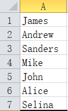
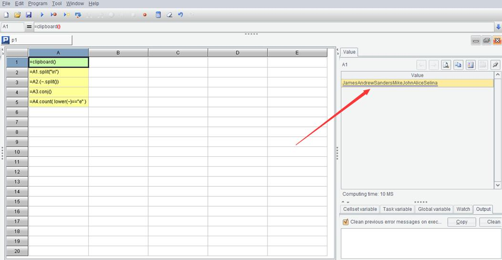
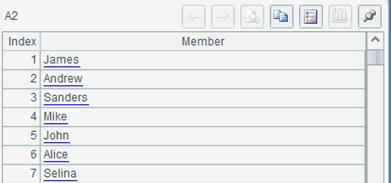
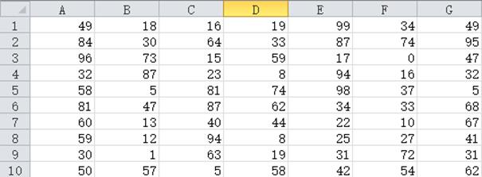
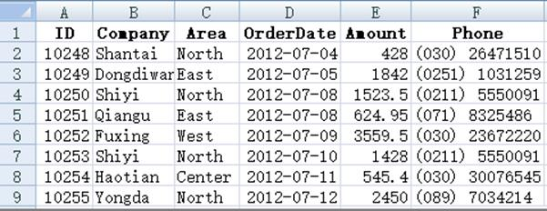

We have used the loop function and mid() to split the string into a sequence of single characters. Because this is very common, SPL provides the split() function. s.split() is equivalent to len(s).(mid(s,~,1)).
Split() also has more string splitting capabilities.
However, before we talk about split, let's learn a clipboard() function.
Just find a text editing program, such as Notepad, enter some text, select it, and then press Ctrl-C, which is the familiar copy action. Now switch to esProc, create a new cellset, enter =clipboard() in cell A1, and then execute to see the value of cell A1.
The text just copied in Notepad is now here. The clipboard() function can take out the text copied to the system clipboard.
Then enter in A2
>clipboard("Hello,esProc")
After execution, switch back to Notepad and press Ctrl-V to paste. What do you see?
The clipboard() function with a parameter will copy the string used as a parameter to the system clipboard, and then it can be pasted in other programs.
Now let's use this clipboard() function to help Excel do something.
Suppose a column in Excel, such as column A, has some names. For example, the first few rows are as follows:

Now we want to know how many times the letter e is used in these names.
It's not easy for Excel to calculate this. Let's use SPL to cooperate.
1) Select this column in Excel, press Ctrl-C and copy it to the clipboard.
2) Switch to esProc and write the following code:
|
|
A |
|
1 |
=clipboard() |
|
2 |
=A1.split("\n") |
|
3 |
=A2.(~.split()) |
|
4 |
=A3.conj() |
|
5 |
=A4.count( lower(~)=="e" ) |
Execute it, A5 is the result we want.
Let's look at each cell value in the script after the code is executed. A1 is as follows:

It takes out the content just copied in Excel from the clipboard. It seems to squeeze the text in the column of Excel together. Look at A2:

This is a sequence. Each member is exactly every row of text in the Excel column. How does this happen?
In fact, what we copied from Excel is a large string composed of these texts, separated by return between the two rows. The return character is a non displayable character, which can not be seen in esProc, so it looks like squeezing the text of these rows together. A1.split("\n") means that the return character is used as the separator to split the large string into a sequence, so it returns to the case where each member exactly corresponds to each row in Excel.
The "\n" here is the return character. The backslash \ in the string constant is called the escape character. Its function is to help us write some characters that are inconvenient to write. For example, return is represented by \n and tab is represented by \t. These are non displayable characters, but they also have codes and are two characters. \n is only one character in the string, although it is written in quotation marks as \ and n (two characters), \t is also similar.
Because \ is regarded as an escape character, if we really want to have a \ in the string constant, it will be escaped. It will be written twice, that is, the actual content of "a\\b" is a\b, and the length is 3; In addition, double quotation marks are used as the delimiter of a string, but it is still possible that a string contains double quotation marks. In this case, it should also be written with an escape character. The actual content of "a\"b" is a"b with a length of 3.
The following statements are simple. A3 is a loop function. Its inner ~.split() will split the string of each member into a sequence of single characters, so A3 is a two-layer sequence:
[["J","a","m","e","s"],["A","n","d","r","e","w"],…]
We have encountered the conj() function when we talked about recursion. Its function is to concatenate the member sequences of a multi-layer sequence and return the result of | operation among these members. Therefore, A3.conj() in A4 will get:
["J","a","m","e","s","A","n","d","r","e","w",…]
The lower() function turns the character into lowercase. Now it can be compared with the string "e", and then count it.
It is written in this way to disassemble the steps and facilitate the interpretation of the code. In fact, these operations can be written continuously:
|
|
A |
|
1 |
=clipboard() |
|
2 |
=A1.split@n().conj() |
|
3 |
=A2.count( lower(~)=="e" ) |
s.split@n(x) is s.split("\n").(~.split(x)), because it is common to split by return first and then split again, SPL adds the @n option to the split function.
Let’s take another example.
A batch of email addresses are stored in a column in Excel. As we know, the email addresses are x@y format. We hope to sort these email addresses so that the mailboxes of the same enterprise can be arranged together, that is, we hope to arrange them in the order of y first and then x, for example, abc@google.com and xyz@google.com should be arranged together instead of putting abc@google.com and abc@apple.com together, but the latter situation will occur if they are sorted directly in Excel.
We still use the clipboard, first copy this column of data in Excel, and then switch to esProc to write code:
|
|
A |
|
1 |
=clipboard() |
|
2 |
=A1.split@n("@") |
|
3 |
=A2.sort([~(2),~(1)]) |
|
4 |
=A3.concat@n("@") |
|
5 |
>clipboard(A4) |
Execute it, then switch back to Excel and paste it in that column with Ctrl-V. It has been arranged as we want.
We've understood A1. The split@n in A2 first split the string into a sequence of strings according to the return character, and then split each member with the separator "@". There is and will only be one @ in an email address, so each member string will be split into a sequence of two members, which are the parts before and after @ respectively. Then, when sorting with the sort function, write the sequence members in reverse. In this way, according to the sequence comparison rules, the later part of @ will be compared first and then the front part of @, that is, the order we want.
concat() in A4 is the opposite function of split(). split() is responsible for splitting and concat() is responsible for concatenating. The @n option indicates doing concat for the 2-layer sequence. Each member is restored to the original email address string and assembled into a large string separated by return, but now the order is reasonable. Then use the clipboard() function to copy it to the clipboard. In Excel, just paste it.
A4 can also be directly written as A3.sort(~(2),~(1)). The sort() function also supports multi parameter form, which means comparing the previous parameter first and then the following parameter. For a sequence with single values, multi parameter sort() is of little significance, but it will be more convenient for a two-layer sequence. After learning structured data in the future, multi parameter sort() will be more common.
Now we are dealing with a single column data in Excel, how about multiple columns?
Of course, there's no problem.
For example, in Excel, we want to sort the data of each row from small to large.

Excel usually sorts by row, and it is difficult to sort in the column direction. It is easy to implement with SPL. Select and copy this piece in Excel, and then switch to esProc to execute such code:
|
|
A |
|
1 |
=clipboard() |
|
2 |
=A1.split@n("\t") |
|
3 |
=A2.(~.sort()) |
|
4 |
=A3.concat@n("\t") |
|
5 |
>clipboard(A4) |
Then paste it back.
The piece of data copied from Excel is a large string after being received by the clipboard function. Each row is separated by return, that is, \n, and the columns in each row are separated by tab(\t). So A1.split@n("\t") in A2 can split this large string into a two-layer sequence, and its inner member is just the data of each cell in Excel; Then sort each row in A3, concatenate it back into such a \n and \t separated string in A4, and paste it into Excel.
Look carefully at the results in Excel. It seems that there is something wrong. It ranks 42 in front of 5. Is the size wrong?
In fact, it's not wrong, because the result that is split by the split function is still a string, and as a string, "42" is smaller than "5".
So how can we compare by value? We need to change A3 to:
=A2.(~.sort(number(~)))
Corresponding to string(), number() can convert a string parameter into numeric type, and then it can be compared and sorted according to numerical rules. Look now, there's no problem.
Under the previous operating system, there was a command called grep, which can find the file containing a string and the line number in many text files. This is a very useful command, which was cancelled by Windows. Let's implement it by ourselves now.
Assuming that the string to be found is in A1, let's specify all text files under the path:
|
|
A |
B |
C |
D |
|
1 |
Abc |
=directory@p("D:/data/*.txt") |
||
|
2 |
for B1 |
=file(A2).read@n() |
=filename(A2) |
|
|
3 |
|
for B2 |
if pos(B3,A1) |
>output(D2/"\t"/#B3/"\t"/B3) |
We're going to learn a few new functions.
The directory() function in B1 will return all .txt file names under the specified path (it is better to use the absolute path, otherwise the file may not be found because the startup path of esProc is uncertain). These file names will be returned as a string sequence, @p indicating that the returned file name is also a full path. A2 loops this sequence, B2 reads out each file, and the file() function generates a file object with the file name, read@n() function reads the text file into a sequence of strings, one member per line. filename() takes out the part of the path in the full path file name.
B3:D3 is easy to understand. Loops through each line of text, if A1 is found, output the file name, line number and the content of this line.
Here we assume that the files are small and can be read in at one time. If the file is large, we need to use the cursor technology mentioned later.
Counting the number of words in a batch of articles is also a common exercise. After learning to read files, we can also practice:
|
|
A |
|
1 |
=directory@p("D:/book/*.txt").sum(file(~).read().words().len()) |
The read() function without options will read the whole text file into a large string, and the words() function will disassemble the words in the large string to form a sequence. Then, just count the length and add it up. One line is enough.
Let's do another task that may be useful in daily work: merge a batch of Excel files into a large one.
We may often collect Excel files of various periods or departments. The Excel format is the same. These files need to be combined into a complete file to facilitate further statistics. But manual copy and paste is very troublesome. If there are dozens or hundreds of files, it will be very tiresome. This kind of thing is just for the program to do.
Let's assume that the Excel to be merged is row type, the first row is the title, and then each row is data, such as:

This is a very common Excel file format.
Add a requirement to spell the original Excel file name into the last column of the merged Excel, so as to distinguish which file the data comes from.
|
|
A |
B |
|
1 |
=directory@p("D:/data/*.xlsx") |
|
|
2 |
for A1 |
=file(A2).xlsimport@w() |
|
3 |
|
=filename@n(A2) |
|
4 |
|
=B2.to(2,).(~|B3) |
|
5 |
|
=@|B4 |
|
6 |
|
=if(#A2==1,B2(1)|"File",@) |
|
7 |
=file("D:/all.xlsx").xlsexport@w([B6]|B5) |
|
filename@n() in B3 will disassemble the part of the file name with the extension removed, and it can also be done by splitting a string. xlsimport@w() in B2 will read an Excel file into a two-layer sequence. Each row of Excel corresponds to one member, and each column in each row corresponds to the member of its member. B4 removes the title of the first row and spells the file name to the end of each row. B5 combines these data, while B6 needs to keep one title and spell one more column.
Finally xlsexport@w() in A7 write the summarized two-layer sequence [B6]|B5 into a new Excel file (it is better to use the absolute path when exporting the file).
xlsimport() without @w option can actually read an Excel file into more convenient data type, and the code to complete this task will be simpler, but it will be introduced after we talk about structured data.
With the in-depth study, we will gradually enter the phase of handling practical tasks. Processing file data is a very common task. In the examples of this section, we all use absolute paths to locate files. Here is a brief introduction to the file search rules of esProc when using relative paths (absolute paths can be found directly):
If the main path is set in the environment (Chapter 6, section 3), esProc will start from this main path; If the main path is empty, search from the path where the currently used script file is located. The current script may have just been created and have not been saved. In this case, there is no path, so it can not determine where to find it, and it is likely that it will not be found. Therefore, either set the main path, or the current script is saved and has the path.
The searching path that was set at the same time as the main path is used to search the called script, and it has nothing to do with the data file. Placing the data file in the searching path will not enable it to be found automatically.
Do some experiments by yourself, and it's easy to figure it out.
When we give examples later, we will use a simple relative path. Please adjust the appropriate system configuration and the path in the code according to the above introduction.